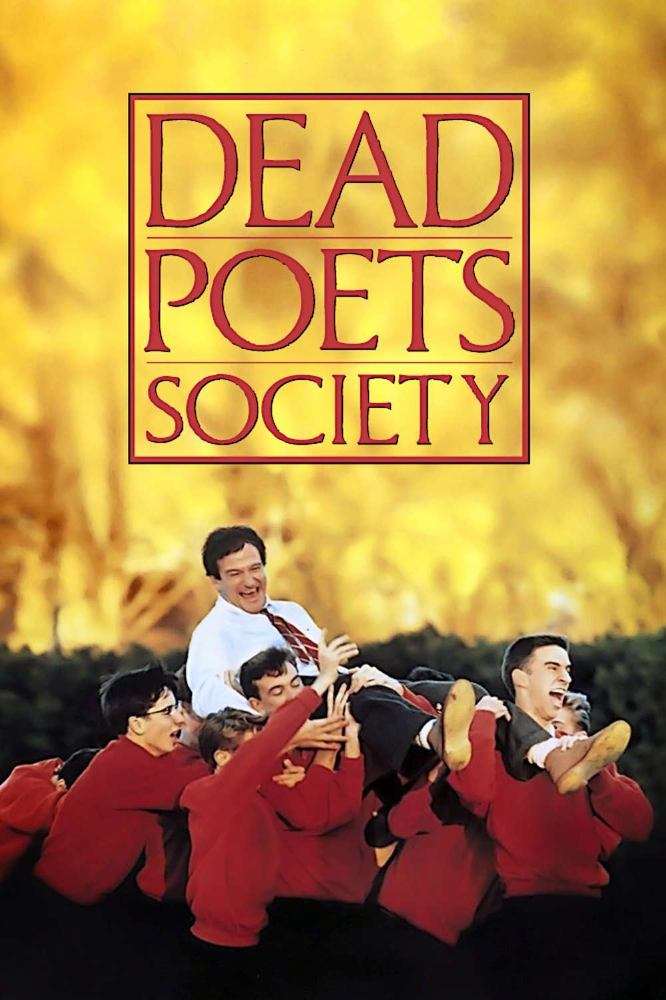
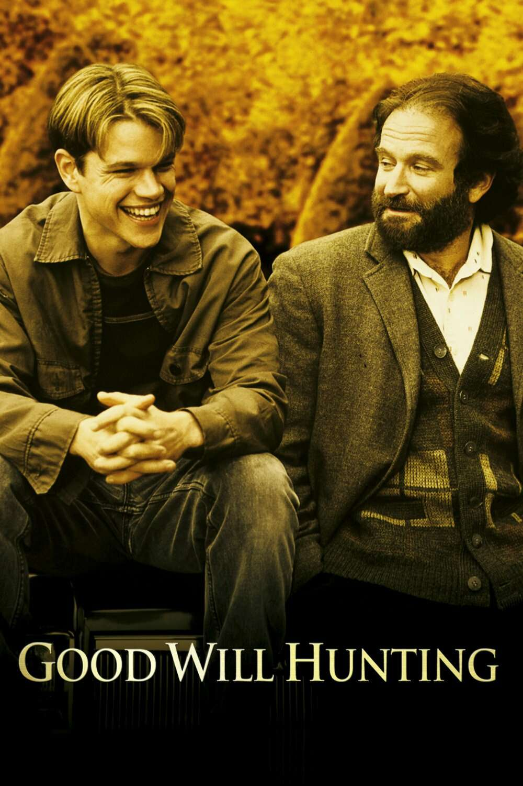
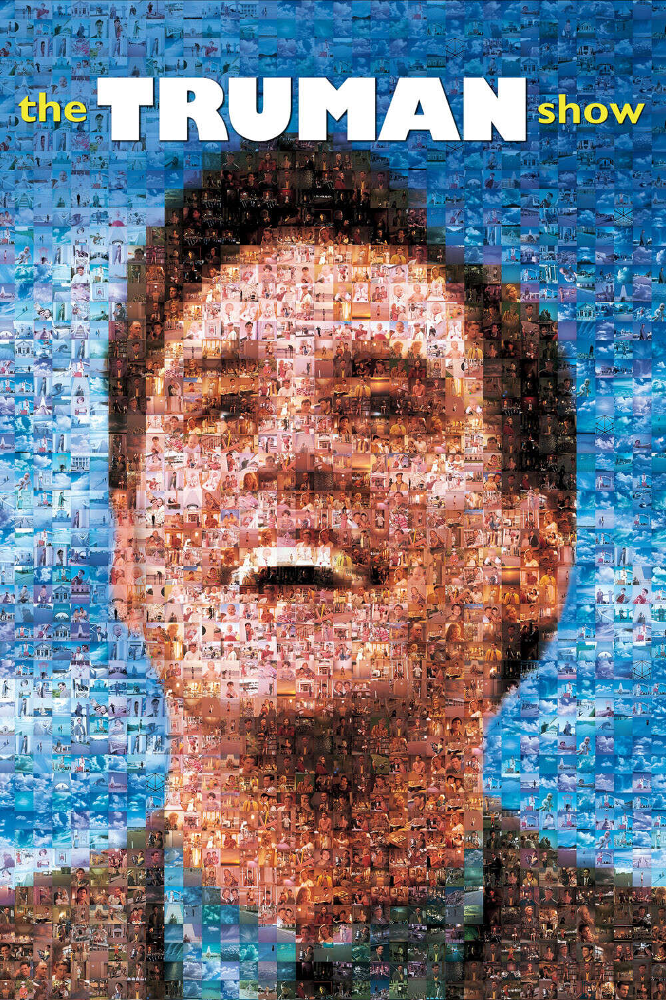
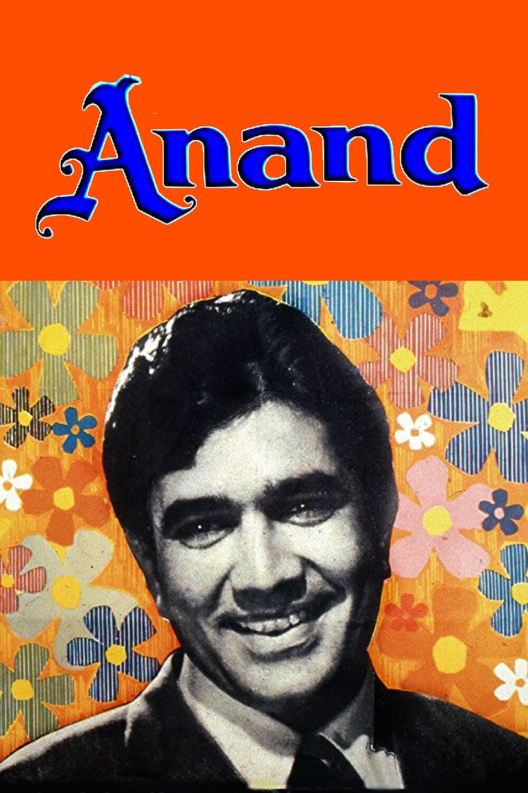
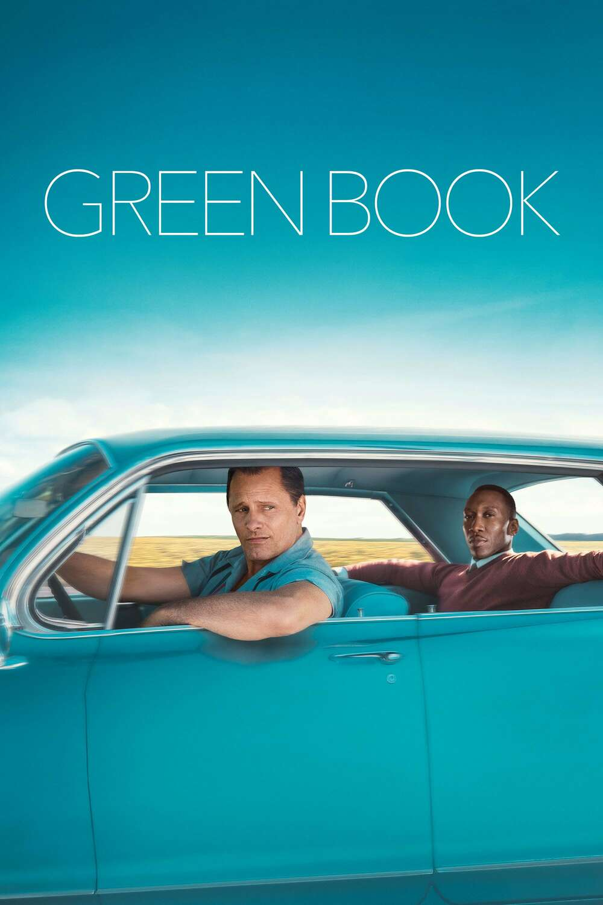
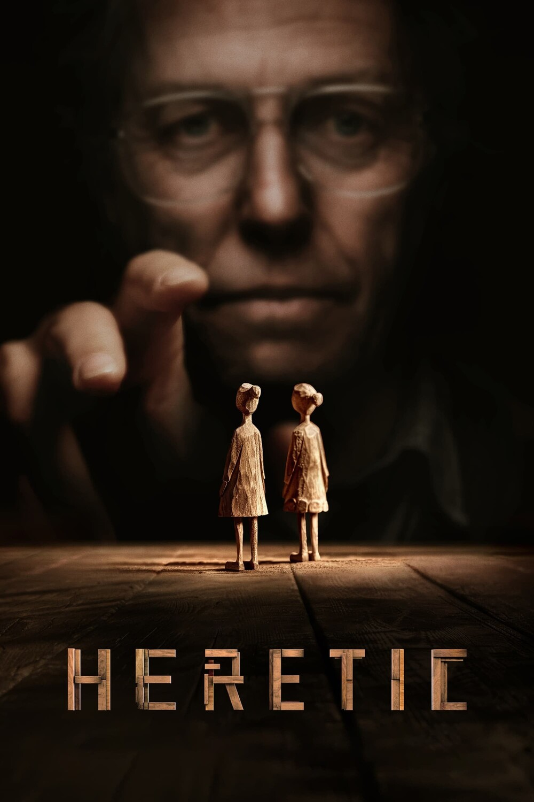
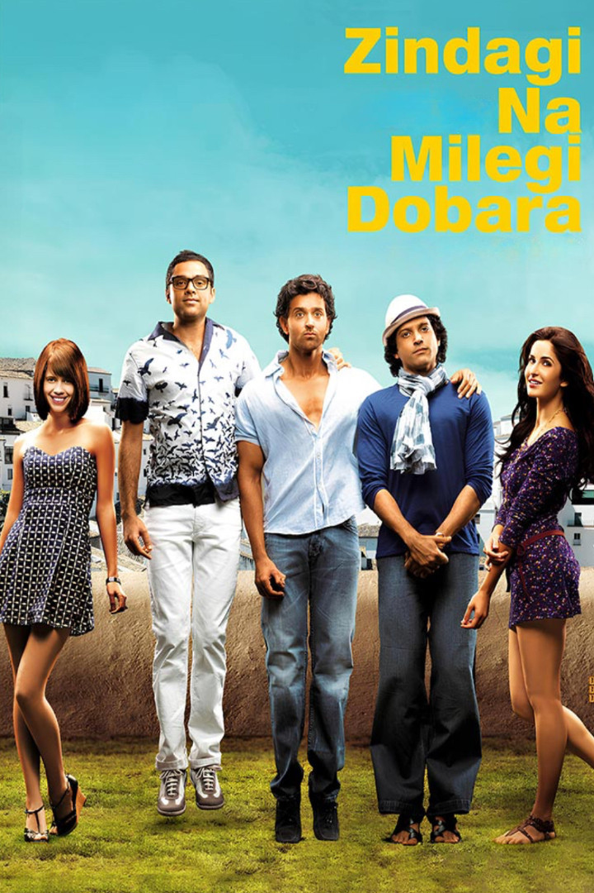
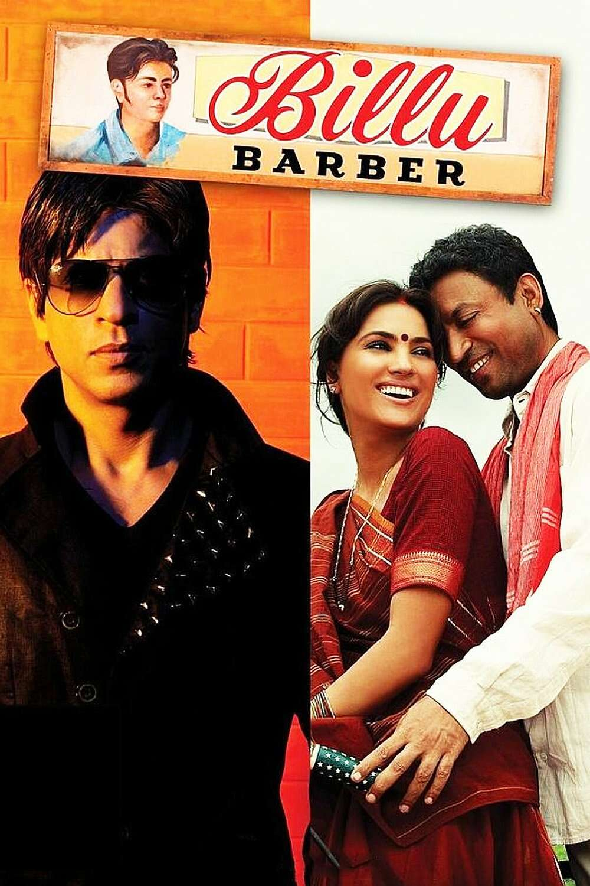
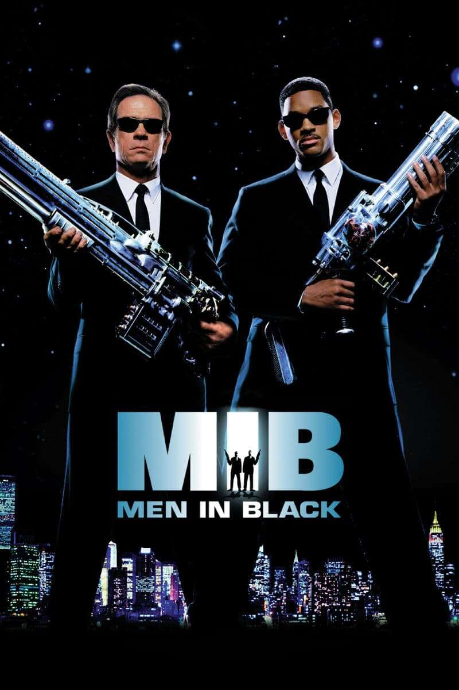

୨୧ ⋆｡˚MY CINEMA CORNER˚｡⋆ ୨୧

At an elite, old-fashioned boarding school in New England, a passionate English teacher inspires his students to rebel against convention and seize the potential of every day, courting the disdain of the stern headmaster.
Directed by Peter Weir
My rating: ⭐⭐⭐⭐⭐

Will Hunting is a headstrong, working-class genius who is failing the lessons of life. After one too many run-ins with the law, Will's last chance is a psychology professor, who might be the only man who can reach him.
Directed by Gus Van Sant
My rating: ⭐⭐⭐⭐

In a picture-perfect seaside town, an insurance salesman begins to realize that his entire existence may be staged and observed by a vast unseen audience as part of a reality TV show.
Directed by Peter Weir
My rating: ⭐⭐⭐⭐

Dr. Bhaskar Bannerjee struggles with his patients' suffering and the darkness and poverty he confronts daily. He treats cancer patient Anand who upon learning of his impending death determines to use the time he has left to the absolute fullest.
Directed by Vidhu Vinod Chopra
My rating: ⭐⭐⭐⭐

Tony Lip, a bouncer in 1962, is hired to drive pianist Don Shirley on a tour through the Deep South in the days when African Americans, forced to find alternate accommodations and services due to segregation laws below the Mason-Dixon Line, relied on a guide called The Negro Motorist Green Book.
Directed by Peter Farrelly
My rating: ⭐⭐⭐⭐

Two young missionaries are forced to prove their faith when they knock on the wrong door and are greeted by a diabolical Mr. Reed, becoming ensnared in his deadly game of cat-and-mouse.
Directed by John McTiernan
My rating: ⭐⭐⭐⭐

Three friends who were inseparable in childhood decide to go on a three-week-long bachelor road trip to Spain, in order to re-establish their bond and explore thrilling adventures, before one of them gets married. What will they learn of themselves and each other during the adventure?
Directed by Zoya Akhtar
My rating: ⭐⭐⭐⭐

When a famous Bollywood actor visits a small village for a film's shoot, a poor hairdresser's claim that they were once childhood friends soon makes him the centre of attention.
Directed by Priyadarshan
My rating: ⭐⭐⭐⭐

After a police chase with an otherworldly being, a New York City cop is recruited as an agent in a top-secret organization established to monitor and police alien activity on Earth: the Men in Black. Agent K and new recruit Agent J find themselves in the middle of a deadly plot by an intergalactic terrorist who has arrived on Earth to assassinate two ambassadors from opposing galaxies.
Directed by Barry Sonnenfeld
My rating: ⭐⭐⭐⭐